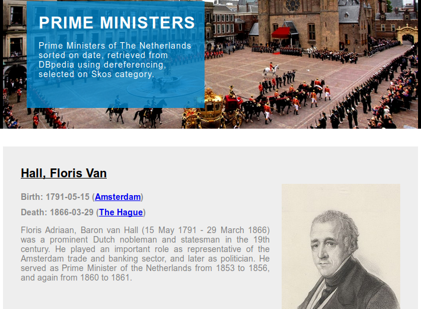
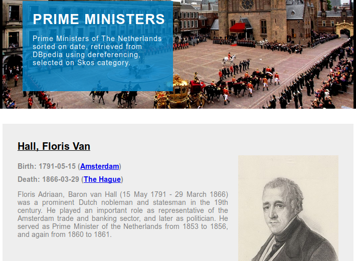
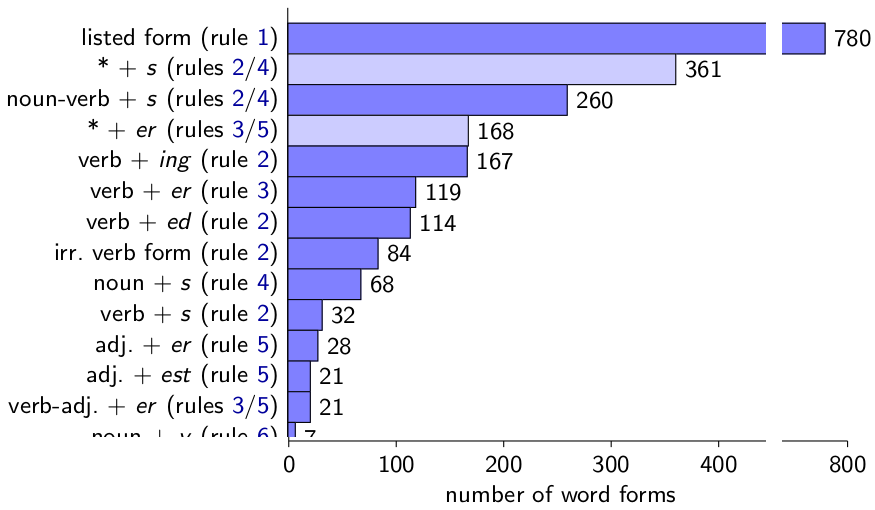

Global Knowledge Communication
and How to Make it
Efficient and Reliable
Tenure Interview of Tobias Kuhn
VU Amsterdam, 8 March 2019
Global Knowledge Communication Crisis

Global Knowledge Communication Crisis

Global Knowledge Communication Crisis

My Research on Global Knowledge Communication
- Nanopublications, Semantic Publishing, and FAIR
- Expressive Controlled Natural Languages
- Controversy and Bias
- Knowledge Networks
Background: Nanopublications

Nanopublication: Simplified Example

Nanopublication: Real Example

http://purl.org/np/RAzquSkwsTAZm61nReG6MOjXEXUx8fNVfdWnAzyn6sOhU
Trusty URIs make resources ...

Nanopublications, Semantic Publishing, and FAIR: Research Highlights
Scholarly communication methods for the digital age:
- Trusty Publishing of Changing Linked Data
- Standardized Data Containers
- Linked Data for Web Developers and End Users
- FAIR Principles
- Genuine Semantic Publishing
Trusty Publishing: Server Network with >10M Nanopublications

[TODO: paper reference]
Nanopublication Network is Fast and Reliable

[TODO: paper reference]
Reliable Changing Linked Data with Nanopublications

[TODO: paper reference]
Reliable Changing Linked Data with Nanopublications
[TODO: paper reference]
Reliable Changing Linked Data with Nanopublications
[TODO: paper reference]
Reliable Changing Linked Data with Nanopublications
[TODO: paper reference]
Nanopublication Overhead Disappears and Turns Into Advantage

[TODO: paper reference]
Nanopublications as Standardized Data Containers
Reliable handling and analysis across datasets,
for example vocabulary use:

[TODO: paper reference]
Cross-Dataset Analysis: Type Distribution Shows Diversity

[TODO: paper reference]
Linked Data for Web Developers and End Users: Data 2 Documents
 

Niels Ockeloen, Victor de Boer, Tobias Kuhn, and Guus Schreiber. Data 2 Documents: Modular and Distributive Content Management in RDF. In EKAW 2016. Springer, 2016. Best paper award.
Data 2 Documents is Easy to Use
Selected Tasks:
- Task 4: Linking and thereby including an existing FOAF profile as article
- Task 5: Creating a new comment article and including it in the document
Results of experts (E1) and students (E2):

Niels Ockeloen, Victor de Boer, Tobias Kuhn, and Guus Schreiber. Data 2 Documents: Modular and Distributive Content Management in RDF. In EKAW 2016. Springer, 2016. Best paper award.

Adoption by major grant agencies and more than 1000 citations in three years.
[TODO: paper reference]
Future Work: Enable
Genuine Semantic Publishing
[TODO: paper reference]
Expressive Controlled Natural Languages: Research Highlights
How Controlled Natural Language can help us to communicate complex issues:
- AIDA
- Thing Explainer Language
AIDA Sentences: Atomic, Independent, Declarative, Absolute

Tobias Kuhn. Using the AIDA Language to Formally Organize Scientific Claims. In Proceedings of CNL 2018. IOS Press, 2018.
AIDA Alzheimer's Case Study

Tobias Kuhn. Using the AIDA Language to Formally Organize Scientific Claims. In Proceedings of CNL 2018. IOS Press, 2018.
Users Find AIDA Sentences Helpful
Student responses on AIDA sentences for papers:

Tobias Kuhn. Using the AIDA Language to Formally Organize Scientific Claims. In Proceedings of CNL 2018. IOS Press, 2018.
Thing Explainer Language: Only 1000 Most Used English Words


Tobias Kuhn. The Controlled Natural Language of Randall Munroe's Thing Explainer. In Proceedings CNL 2016. Springer, 2016.
Thing Explainer Language: Not Quite as Simple as Advocated
Tobias Kuhn. The Controlled Natural Language of Randall Munroe's Thing Explainer. In Proceedings CNL 2016. Springer, 2016.
Controversy and Bias: Research Highlights
- CAPOTE Controversy Model
- Bias in International Video News
CAPOTE Controversy Model

Confirmed by regression analysis based on crowdsourced data:

Benjamin Timmermans, Tobias Kuhn, Kaspar Beelen, Lora Aroyo. Computational Controversy. In Proceedings of Socinfo2017. Springer, 2017.
Bias in International Video News (preliminary results)


Knowledge Networks
Literature Social Network / Linked Open Data

[TODO: paper reference]
Personal Research Grant Proposals (unsuccessful)
NWO (A+/A/B/UF/U scale):
- Vidi 2016: A+, A+, A
- Top Grant (module 2) 2017: A, A
- Vidi 2017: A+, A, A
- Top Grant (module 2) 2018: A+, A, UF
ERC Starting Grant 2016: Very Good (5), Excellent (6), Outstanding (1)
Education Highlights
- Master course Knowledge and Media
- Bachelor course Information Retrieval
- Master/Bachelor project supervisor of 30 students
Master course Knowledge and Media
- Complete Redesign of Content and Structure
- Assessment: Flash Presentations, Posters, Overview and Focus Papers
[TODO]

Bachelor Course Information Retrieval
- 6 IPython Notebook Based Assignments
- Multiple-Choice Exam
[TODO]

Master/Bachelor project supervision
[TODO]
Management Highlights
- Main PI of Capturing Bias Project (NWO VWdata)
- Co-PI of FAIR Workflows Project (NWO JEDS)
- Supervisor of 3 Postdocs and 4 PhD Students
- Master IS Project Coordinator
- Exam Committee Member
- Education Committee Member of BSc/MSc AI
- Editor-in-Chief of Journal Data Science at IOS Press